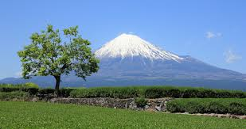
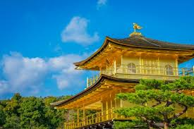
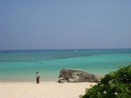
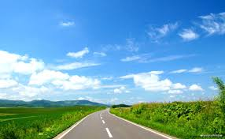
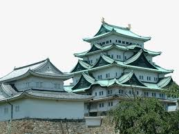

| Mount Fuji |
Japan's weather in Mount FujiFuji Mountain Rises to an elevation of 7,144ft above the pure and deep blue waters of Waldo Lake. Fuji Mountain is an old sheild volcano, that when one looks to the northwest from the willamette pass sees a forested ridge with a camel hump at it's north end. Looking at Fuji from points north of the peak it takes on a rugged precipitious look. Fuji with it's twin to the east Mt Ray overlooks a forested benchland to the south with many lakes and rock outcroppings. |
 |
| Kinkakuji |
Kinkakuji is a Zen temple in northern Kyoto whose top two floors are completely covered in gold leaf. Formally known as Rokuonji, the temple was the retirement villa of the shogun Ashikaga Yoshimitsu, and according to his will it became a Zen temple of the Rinzai sect after his death in 1408. Kinkakuji was the inspiration for the similarly named Ginkakuji (Silver Pavilion), built by Yoshimitsu's grandson, Ashikaga Yoshimasa, on the other side of the city a few decades later. |
 |
| Okinawa |
Spring Okinawa is a Japanese island in the East China Sea. In Naha city, Shuri Castle is the rebuilt palace of the Ryukyu Kingdom. One of several remaining Ryukyuan fortresses on Okinawa from the Gusuku period, it features the ornate gate of Shureimon. The Okinawa Prefectural Museum has exhibitions on Okinawa’s natural and cultural heritage, plus a collection of fine art. |
 |
| Hokaido |
Hokaido Hokkaido, the northernmost of Japan’s main islands, is known for its volcanoes, natural hot springs (onsen) and ski areas. Rugged Daisetsuzan National Park is home to steaming, volcanic Mount Asahi. Shikotsu-Tōya National Park contains caldera lakes, geothermal springs and a Mount Fuji look-alike, Mount Yōtei. Popular ski resorts include Rusutsu, Furano and Niseko. |
 |
| Nagoya |
Nagoya Nagoya, capital of Japan’s Aichi Prefecture, is a manufacturing and shipping hub in central Honshu. The city’s Naka ward is home to museums and pachinko (gambling machine) parlors. Naka also includes the Sakae entertainment district, with attractions like the Sky-Boat Ferris wheel, which is attached to a mall. In northern Naka is Nagoya Castle, a partly reconstructed 1612 royal home displaying Edo-era artifacts. |
 |